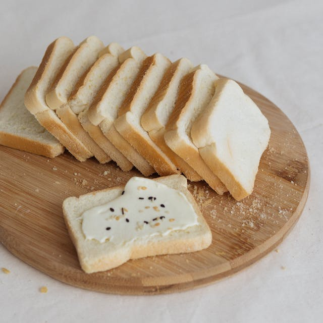
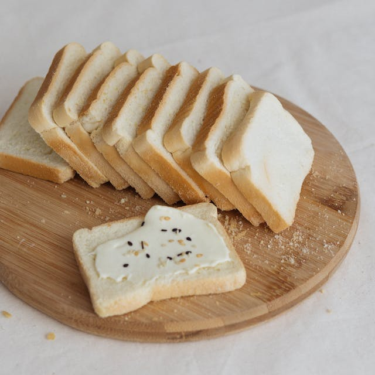

Anabolic Sweets
Anabolic Sweets
 Anabolic Toast

Anabolic Toast

When you are a money-lacking student, it may be difficult to maintain a proper diet that is rich in protein and micronutrients. This is especially so if you attend the gym regularly.
This website is going to help you on your journey to becoming an anabolic monster without squandering lots of money.